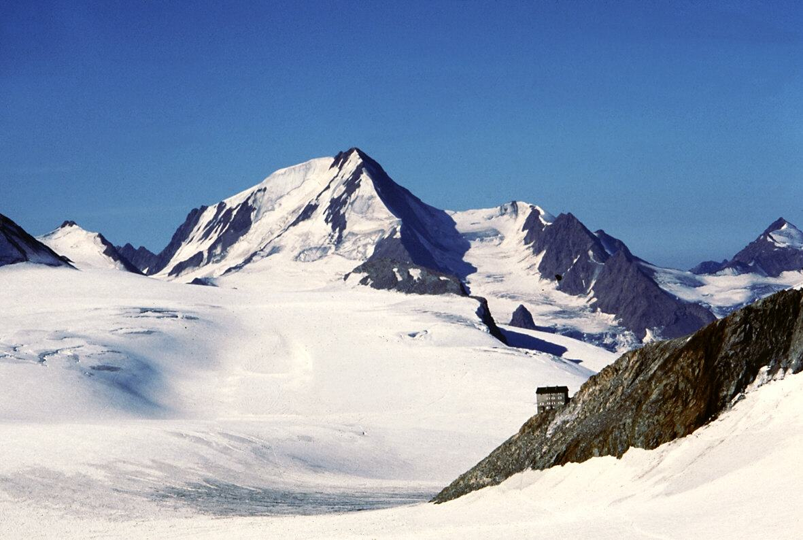
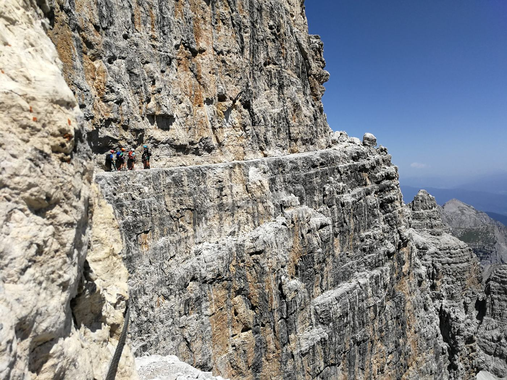
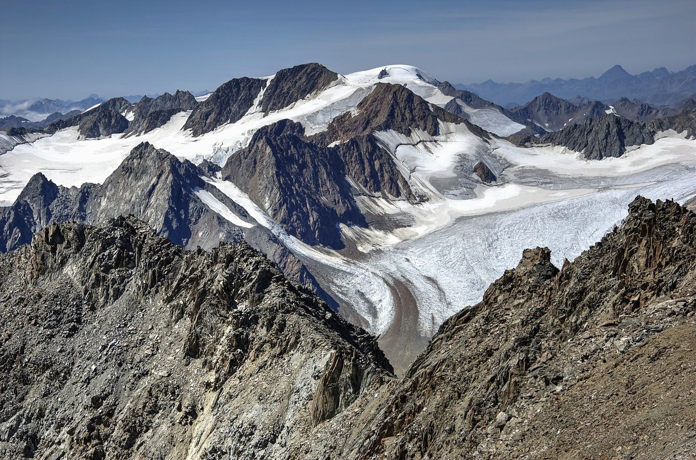
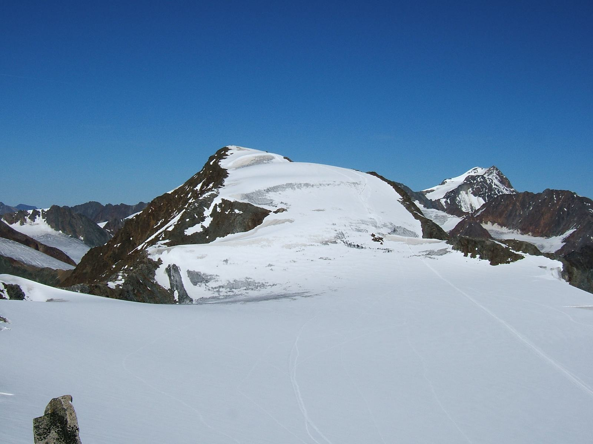
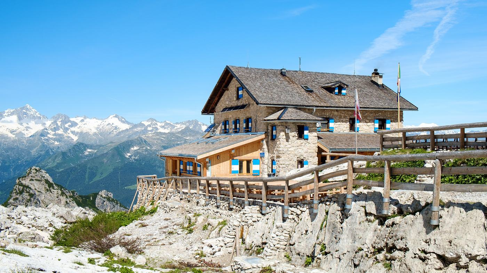
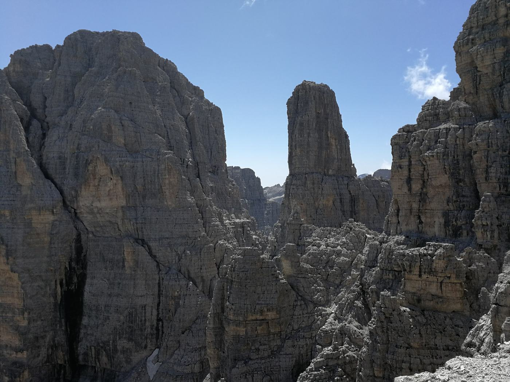
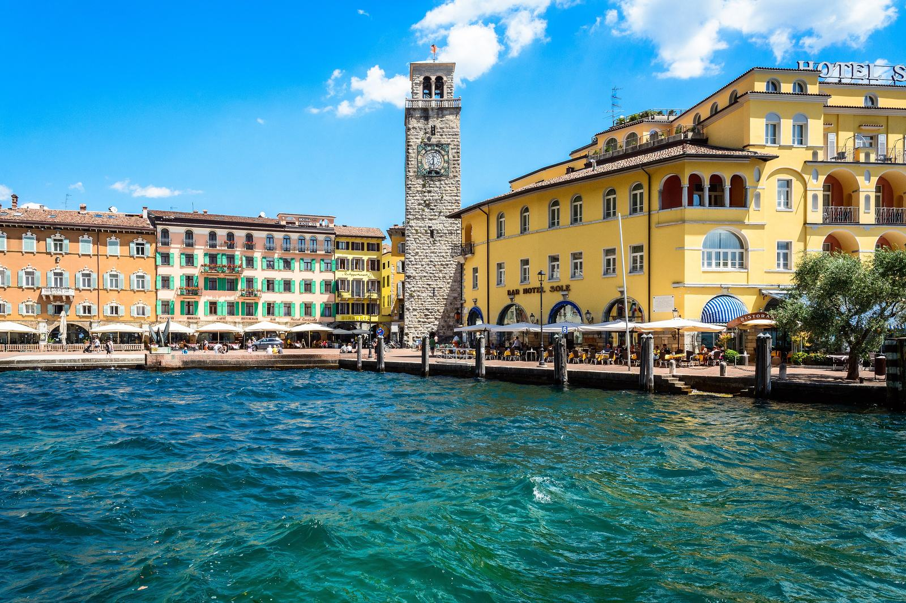

Ice & Iron
Eight days from the glaciers of the Ötztal to the via ferratas of the Brenta Dolomites, finishing at Lake Garda.

OverviewThe plan, timing and price
Day by day8 days, each with its own map
MapThe whole route and the altitude
DistancesEvery day compared, with difficulty
Huts & hotelsWhere you sleep each night
ViewsGlaciers, ledges and the lake
PracticalWhat's included, extras, Arco, sourcesThe plan
Three days roped up on Austria's biggest glaciers, three days on the iron ladders of the Brenta, then pasta by the lake. We leave from Munich.
Sigi's quote
€10,500
For the trip as quoted. I've assumed it covers both of you; confirm with Sigi.
Not in the quote, so budget separately: getting to Munich, lunches and drinks, hut showers, cable car tickets, a possible extra night in Madonna, tips, and travel insurance with mountain rescue cover.
When to go
Next step: send Sigi your start date so he can book, starting with the Brenta huts.
Day by day
All eight days in one scroll, each with its own map and stats. Distances, times and metres are my estimates from published hut-to-hut data, since Sigi didn't give any. He'll set the real pace on the day.
The route
Tap a day to zoom in. Solid lines are on foot, dashed lines are road, train or cable car. Walking lines join real hut and summit coordinates, so they show the shape of each day, not the exact trail.
Up & down
Bars show each day's high point and the line shows where you sleep. The big jump comes early: from Munich at 520 m to 3,277 m by night two. Tap a bar to open that day.
Distances & difficulty
All eight days side by side. All figures are estimates; tap a row to open the day.
Difficulty is my 1–5 scale: 1 is an easy walk or a travel day, 5 is long, exposed and technical. Sources are on the Practical page.
Huts & hotels
Half board every night. In the huts expect shared rooms, big dinners and lights out around 22:00. Tap any photo to see it larger.
On the way
The glaciers, ledges and lake in between.
The details
What Sigi's quote covers, what it doesn't, what to bring, and the Lake Garda finish.
Included
- Certified mountain guide (Sigi) for all 8 days
- All 7 nights with half board (dinner and breakfast)
- Rental gear: harness, helmet, ferrata set, crampons, ice axe, rope
- Organisation and hut bookings (the Brenta huts fill first)
- Not included: transfers, ~€250 per person
Not in the quote, so budget separately: getting to Munich, lunches and drinks, hut showers, cable car tickets, a possible extra night in Madonna, tips, and travel insurance with mountain rescue cover.
Bring
Stiff boots that take crampons, a hut sleeping-bag liner, warm layers for dawn on the glacier, sun cream, glacier glasses, ferrata gloves, earplugs, and cash for the huts.
Option B · Days 7–8
Finish at the lake
After the Bocchette, take a taxi from Madonna to Arco (about 1 h 15) for a hotel night and dinner out. On Day 8 climb the short Ferrata Colodri, which ends in the middle of Arco. In the afternoon take a taxi to Rovereto and a direct train to Munich.